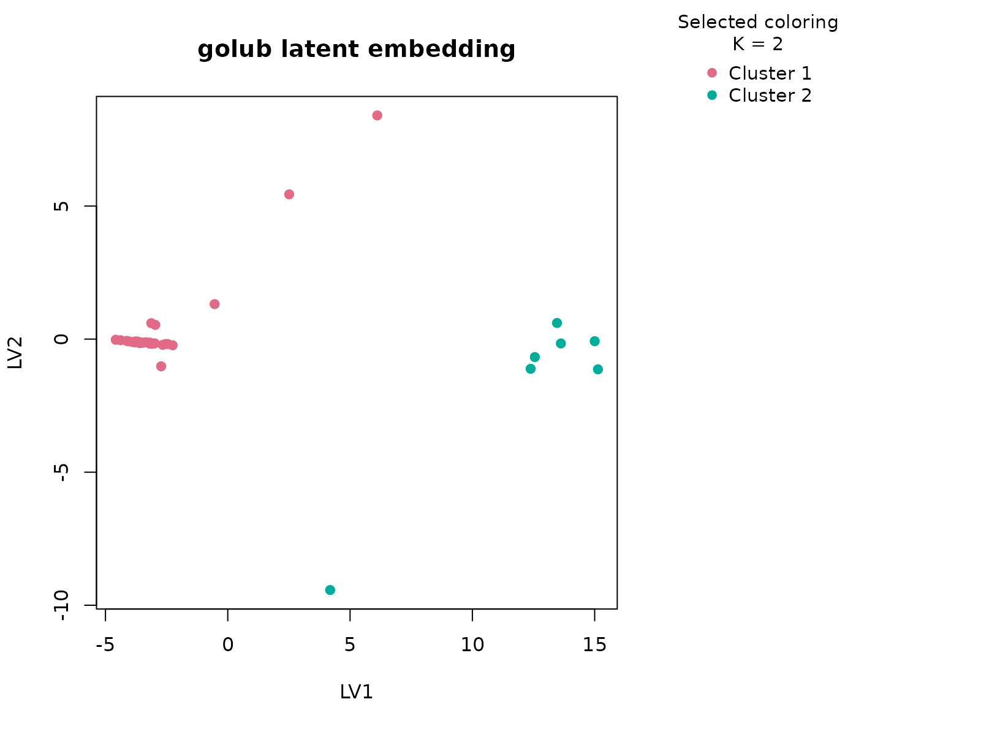
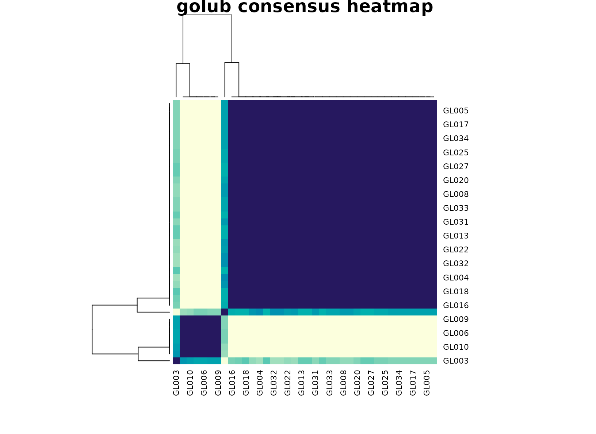

Background
golub is a landmark leukemia expression dataset
distributed through Bioconductor’s multtest package. For
this vignette, uccdf ships a compact derived table called
golub_gene_panel that keeps a small set of highly variable
genes together with the observed ALL versus AML lineage labels for
interpretation. This gives us a robust omics example in dataframe
form.
Objective
The objective is to determine whether the reduced expression panel
supports a stable sample partition and whether that partition aligns
with the major lymphoid versus myeloid lineage split. More broadly, this
article shows how uccdf behaves when a classical omics
matrix is summarized into a sample-level panel for exploratory
clustering.
Data preparation
data(golub_gene_panel)
analysis_golub <- golub_gene_panel[, c(
"sample_id", "TCL1", "TCRB_1", "CTRL_M", "CTRL_5", "IL8", "TCRB_2", "MAL", "CTRL_3"
)]
head(analysis_golub)
#> sample_id TCL1 TCRB_1 CTRL_M CTRL_5 IL8 TCRB_2 MAL
#> 1 GL001 3.13362 -1.06542 2.76569 3.13533 -0.34805 0.36707 -1.45769
#> 2 GL002 -1.39420 2.90134 -1.27045 0.21415 2.12872 2.63385 2.61454
#> 3 GL003 -1.46227 -1.46227 1.60433 2.08754 -0.49345 2.99977 2.99977
#> 4 GL004 2.30130 -1.40715 1.53182 2.23467 -0.58185 -1.40715 -1.40715
#> 5 GL005 2.36555 -1.42668 1.63728 0.93811 -1.42668 -1.42668 -1.42668
#> 6 GL006 -1.21719 3.49405 1.85697 2.24089 -0.50662 2.84805 3.33812
#> CTRL_3
#> 1 2.64342
#> 2 1.01416
#> 3 1.70477
#> 4 1.63845
#> 5 -0.36075
#> 6 1.73451Analysis
fit_golub <- fit_uccdf(
analysis_golub,
id_column = "sample_id",
candidate_k = 1:4,
n_resamples = 20,
n_null = 39,
row_fraction = 0.9,
col_fraction = 0.9,
seed = 333
)
fit_golub$selection
#> $alpha
#> [1] 0.05
#>
#> $global_p_value
#> [1] 0.025
#>
#> $null_family
#> [1] "independence_marginal_null"
#>
#> $detected_structure
#> [1] TRUE
#>
#> $best_exploratory_k
#> [1] 2
#>
#> $best_supported_k
#> [1] 2
select_k(fit_golub)
#> k stability null_mean null_sd stability_excess z_score p_value supported
#> 1 2 0.9015351 0.5864846 0.05935760 0.3150505 5.307668 0.025 TRUE
#> 2 3 0.5549389 0.8208484 0.11010390 -0.2659094 -2.415077 1.000 FALSE
#> 3 4 0.5620306 0.7797209 0.06664116 -0.2176903 -3.266604 1.000 FALSE
#> objective
#> 1 5.169038
#> 2 -3.634800
#> 3 -5.543862Results
golub_assign <- merge(augment(fit_golub), golub_gene_panel, by.x = "row_id", by.y = "sample_id", all.x = TRUE)
head(golub_assign)
#> row_id cluster confidence ambiguity exploratory_cluster
#> 1 GL001 1 0.9888889 0.01111111 1
#> 2 GL002 2 0.9361111 0.06388889 2
#> 3 GL003 2 0.6204353 0.37956465 2
#> 4 GL004 1 0.9896296 0.01037037 1
#> 5 GL005 1 0.9870370 0.01296296 1
#> 6 GL006 2 0.9327485 0.06725146 2
#> exploratory_confidence exploratory_ambiguity assignment_mode selected_k
#> 1 0.9888889 0.01111111 selected 2
#> 2 0.9361111 0.06388889 selected 2
#> 3 0.6204353 0.37956465 selected 2
#> 4 0.9896296 0.01037037 selected 2
#> 5 0.9870370 0.01296296 selected 2
#> 6 0.9327485 0.06725146 selected 2
#> exploratory_k TCL1 TCRB_1 CTRL_M CTRL_5 IL8 TCRB_2 MAL
#> 1 2 3.13362 -1.06542 2.76569 3.13533 -0.34805 0.36707 -1.45769
#> 2 2 -1.39420 2.90134 -1.27045 0.21415 2.12872 2.63385 2.61454
#> 3 2 -1.46227 -1.46227 1.60433 2.08754 -0.49345 2.99977 2.99977
#> 4 2 2.30130 -1.40715 1.53182 2.23467 -0.58185 -1.40715 -1.40715
#> 5 2 2.36555 -1.42668 1.63728 0.93811 -1.42668 -1.42668 -1.42668
#> 6 2 -1.21719 3.49405 1.85697 2.24089 -0.50662 2.84805 3.33812
#> CTRL_3 lineage lineage_band
#> 1 2.64342 ALL lymphoid
#> 2 1.01416 ALL lymphoid
#> 3 1.70477 ALL lymphoid
#> 4 1.63845 ALL lymphoid
#> 5 -0.36075 ALL lymphoid
#> 6 1.73451 ALL lymphoid
aggregate(
cbind(TCL1, TCRB_1, CTRL_M, CTRL_5, IL8, TCRB_2, MAL, CTRL_3, confidence) ~ cluster,
golub_assign,
function(x) round(mean(x, na.rm = TRUE), 2)
)
#> cluster TCL1 TCRB_1 CTRL_M CTRL_5 IL8 TCRB_2 MAL CTRL_3 confidence
#> 1 1 0.55 -1.02 0.40 0.83 0.45 0.05 -1.31 0.36 0.97
#> 2 2 -1.32 2.59 0.82 1.47 0.20 2.79 2.84 1.41 0.89
table(golub_assign$cluster, golub_assign$lineage)
#>
#> ALL AML
#> 1 20 11
#> 2 7 0
round(prop.table(table(golub_assign$cluster, golub_assign$lineage), margin = 1), 3)
#>
#> ALL AML
#> 1 0.645 0.355
#> 2 1.000 0.000
plot_embedding(fit_golub, color_by = "selected", main = "golub latent embedding")
plot_consensus_heatmap(fit_golub, main = "golub consensus heatmap")
Discussion
The selected two-cluster solution is strong and easy to interpret. The expression summary table usually shows coordinated differences across the chosen genes, and the lineage table typically maps those two clusters onto the major ALL versus AML distinction with high purity. This is what we hope to see in a reduced omics panel: the dominant biological axis remains visible even after the matrix has been compressed into a smaller dataframe.
This article is also useful methodologically. Omics workflows often
begin with a large matrix and then move into derived sample-level
summaries. uccdf is aimed at that latter stage. The
consensus heatmap and null-calibrated K selection show that
the reduced panel still carries a stable structure that is stronger than
the column-wise null baseline.
Interpretation
For golub, the clusters should be interpreted as stable
expression-defined sample groups that largely track leukemia lineage.
The vignette is not meant to replace a full supervised leukemia
analysis. Its role is to demonstrate that an omics-derived dataframe can
still yield a strong, reproducible consensus partition under the same
typed workflow used for the other tabular examples.